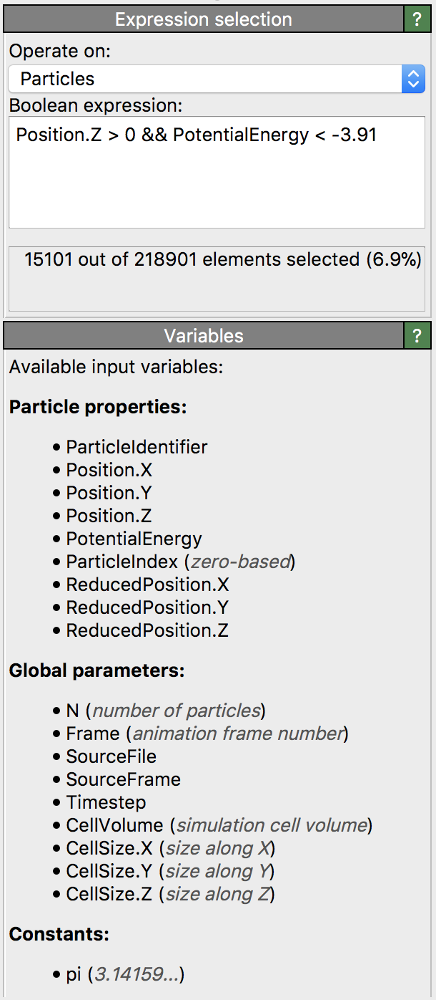

Expression selection
{kind=link}
This modifier let you select particles, bonds or other data elements based on user-defined criteria, i.e., by entering a Boolean expression, which is evaluated by the modifier for every input element. Those elements get selected for which the Boolean expression yields a non-zero result (true); all other elements, for which the expression evaluates to zero (false), get deselected.
The Boolean expression can contain references to local properties as well as global quantities, e.g. the simulation cell size or the current timestep number. Hence, the modifier can be used to dynamically select elements based on properties such as position, type, energy, etc. and any combination thereof. The list of available input variables that may be incorporated into the expression is displayed in the lower panel as shown in the screenshot.
Boolean expressions can contain comparison operators like ==, !=, >=, etc.,
and several conditions can be combined using logical AND and OR operators (&& and ||).
Note that variable names and function names are case-sensitive and restricted to alphanumeric characters and underscores. That’s why OVITO automatically replaces invalid characters in property names with an underscore to generate valid variable names that can be used in the expression.
Expression syntax
The expression syntax is very similar to the C programming language. Arithmetic expressions can be created from float literals, variables or functions using the following operators in this order of precedence:
Operator |
Description |
|---|---|
|
expressions in parentheses are evaluated first |
|
exponentiation (A raised to the power B) |
|
multiplication and division |
|
addition and subtraction |
|
comparison between A and B (result is either 0 or 1) |
|
logical AND operator: result is 1 if A and B differ from 0, else 0 |
|
logical OR operator: result is 1 if A or B differ from 0, else 0 |
|
if A differs from 0 (i.e. is true), the resulting value of this expression is B, else C |
The expression parser supports the following functions:
Function name |
Description |
|---|---|
|
Absolute value of A. If A is negative, returns -A otherwise returns A. |
|
Arc-cosine of A. Returns the angle, measured in radians, whose cosine is A. |
|
Same as |
|
Arc-sine of A. Returns the angle, measured in radians, whose sine is A. |
|
Same as |
|
Arc-tangent of A. Returns the angle, measured in radians, whose tangent is A. |
|
Two argument variant of the arctangent function. Returns the angle, measured in radians. see here. |
|
Same as |
|
Returns the average of all arguments. |
|
Cosine of A. Returns the cosine of the angle A, where A is measured in radians. |
|
Same as |
|
Exponential of A. Returns the value of e raised to the power A where e is the base of the natural logarithm, i.e. the non-repeating value approximately equal to 2.71828182846. |
|
Returns the floating-point remainder of A/B (rounded towards zero). |
|
Rounds A to the closest integer. 0.5 is rounded to 1. |
|
Natural (base e) logarithm of A. |
|
Base 10 logarithm of A. |
|
Base 2 logarithm of A. |
|
Returns the maximum of all values. |
|
Returns the minimum of all values. |
|
Returns: 1 if A is positive; -1 if A is negative; 0 if A is zero. |
|
Sine of A. Returns the sine of the angle A, where A is measured in radians. |
|
Same as |
|
Square root of a value. |
|
Returns the sum of all parameter values. |
|
Tangent of A. Returns the tangent of the angle A, where A is measured in radians. |
The expression parser supports the following constants:
Constant name |
Description |
|---|---|
pi |
Pi (3.14159…) |
inf |
Infinity (∞) |
Usage examples
The first expression below will select all particles of numeric type 1 or 2, similar to what the Select type modifier does. The second expression will select particles within a cylindrical region of radius 10:
ParticleType==1 || ParticleType==2
sqrt(Position.X*Position.X + Position.Y*Position.Y) < 10.0
See also
ovito.modifiers.ExpressionSelectionModifier (Python API)